©2016 Consider Magazine

Should Michigan Go Greener?
March 16, 2017
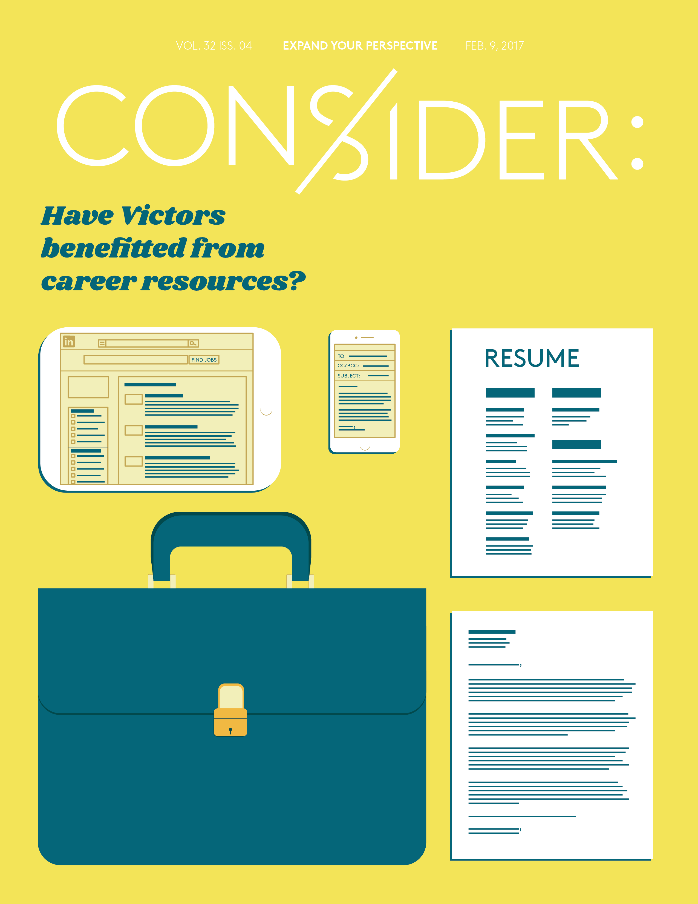
Have Victors Benefitted From Career Resources?
February 9, 2017
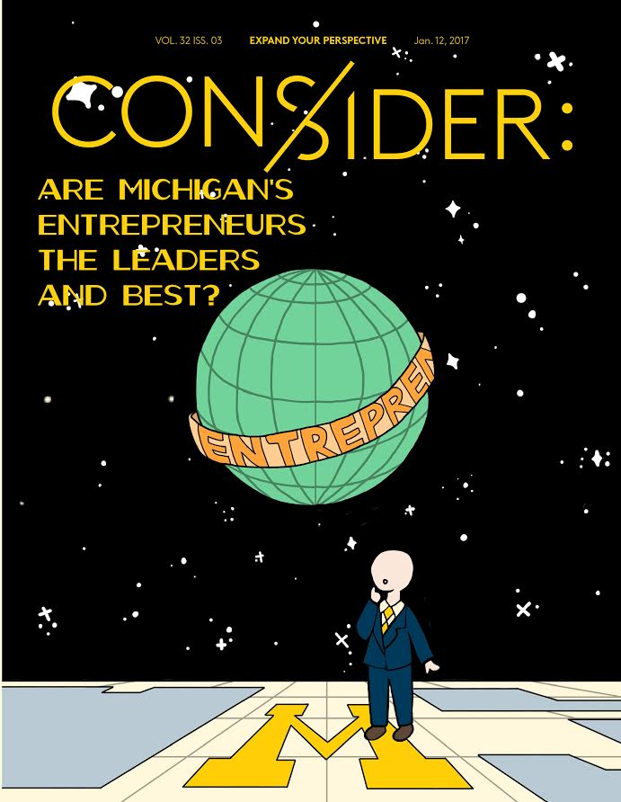
Are Michigan's Entrepreneurs the Leaders and Best?
January 12, 2017
How Relevant Are Safe Spaces?
November 7, 2016
What is the Future of Media?
October 20, 2016
Who is Responsible for Political Polarization?
March 24, 2016
Dating Apps: Can You Call it Love?
February 18, 2016
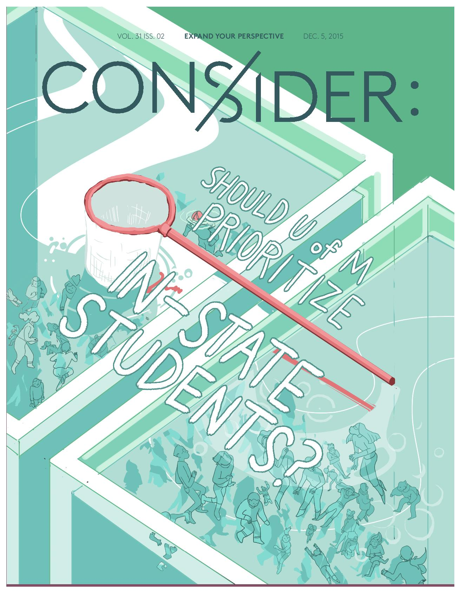
Should U of M Prioritize In-State Students?
December 5, 2015
Are Cultural Halloween Costumes Problematic?
November 1, 2015
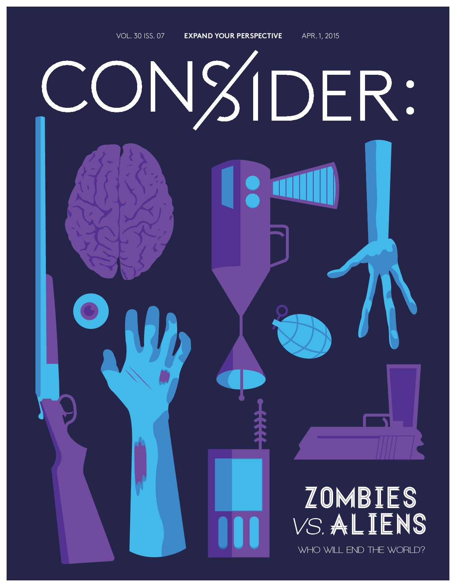
Zombies vs. Aliens
April 1, 2015
Sex Education
March 18, 2015
Guantanamo Bay: Practicing Our Values or Protecting Ourselves?
February 23, 2015
Net Neutrality
February 5, 2015
Legalize Our Campus?
February 3, 2015
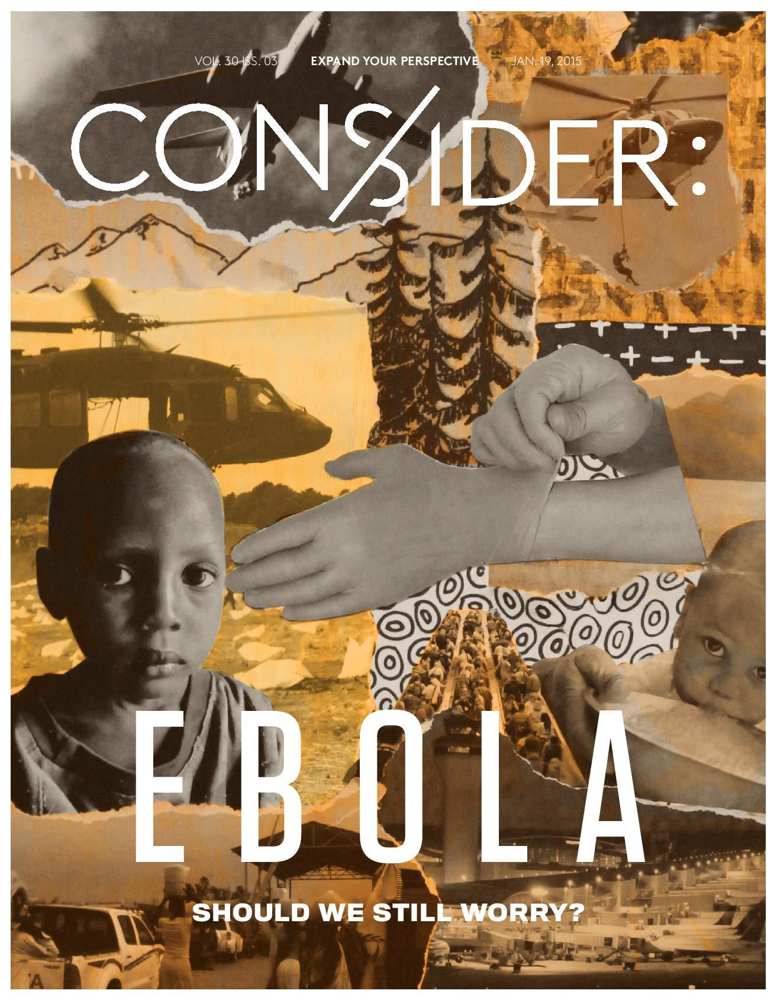
Ebola: Should We Still Worry?
January 19, 2015
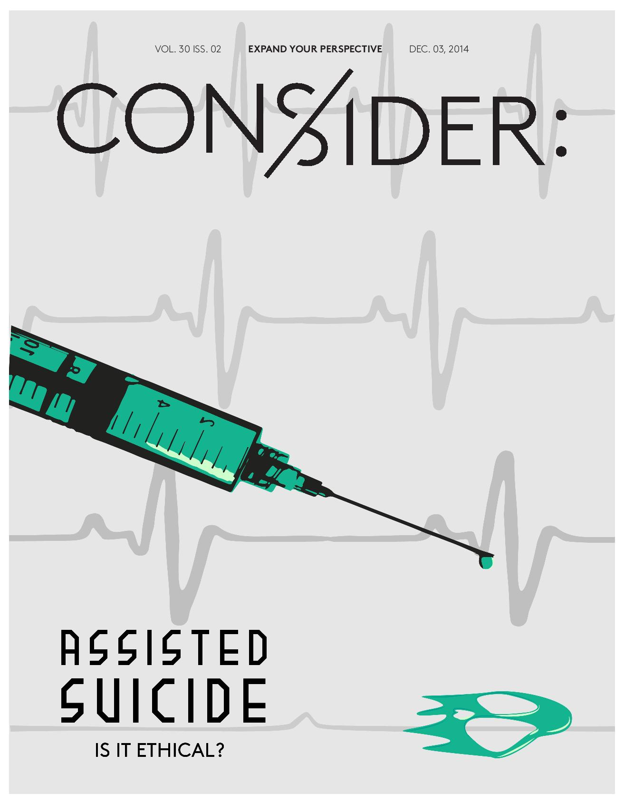
Assisted Suicide
December 3, 2014
Hazing: Fraternity or Autocracy?
October 27, 2014
The Euro: Help or Hinderance?
April 7, 2014
Evaluating the Language Requirement
March 31, 2014
Bias in the Media
March 26, 2014
Prostitution: Should It Be Legalized?
February 17, 2014
Apple vs. Android
February 3, 2014
Should the Drinking Age be Lowered?
January 27, 2014

Detroit: Is this the end or does it still have a chance?
December 2, 2013

Is Illegal Downloading Wrong?
November 18, 2013
Should Uncle Sam Be Watching You?
November 4, 2013
Should Collge Athletes be Paid?
Ocober 21, 2013
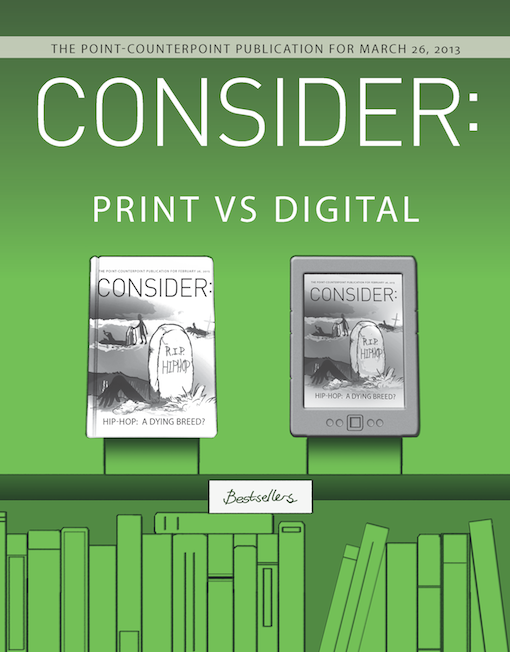
Print vs. Digital
March 26, 2013
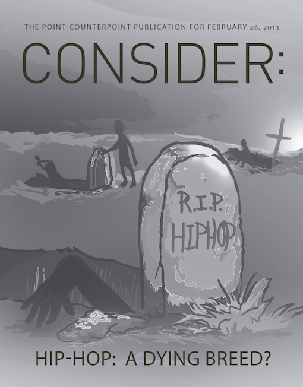
Is Hip-Hop a Dying Breed?
February 26, 2013
Love or Lust?
February 12, 2013
Is University Necessary?
January 22, 2013
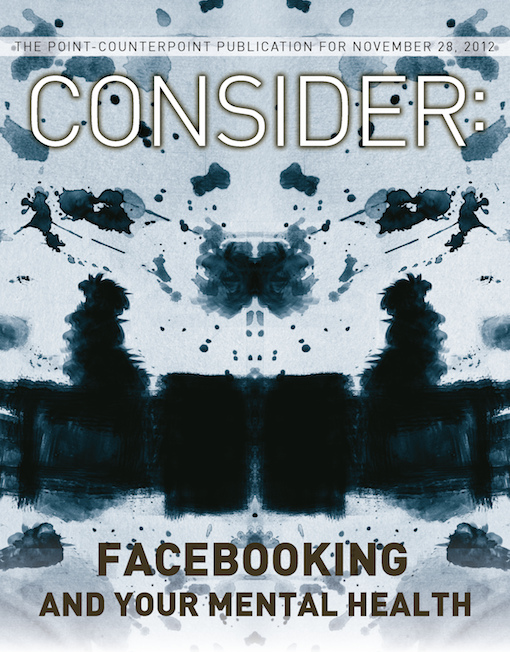
Facebooking and Your Mental Health
November 28, 2012
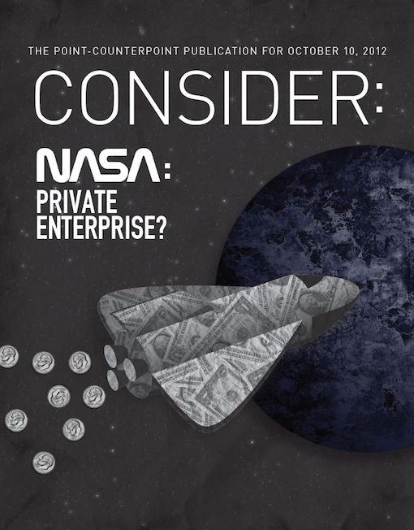
Nasa as a Private Enterprise
October 10, 2012
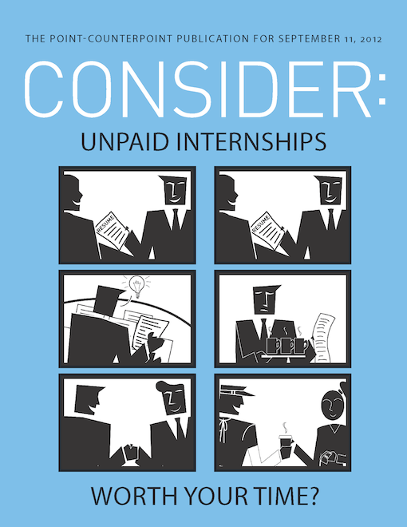
Unpaid Internships
September 11, 2012
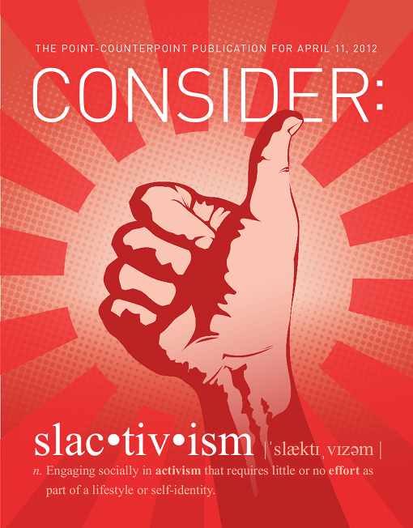
Slactivism
April 11, 2012